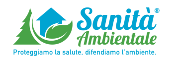

Scheda Tecnica Prodotto
Identificazione del prodotto
Nome: Erbicida totale ad azione sistemica per impieghi extra-agricoli
Composizione:
- Glifosate acido puro: 43.9 g
- Acqua: q.b. a 100 g
Indicazioni di Pericolo
H411 - Tossico per gli organismi acquatici con effetti di lunga durata.
EUH401 - Per evitare rischi per la salute umana e per l’ambiente, seguire le istruzioni per l’uso.
Composizione e Informazioni sugli Ingredienti
- Glyphosate isopropylamine salt (50-55%) - Aquatic Chronic 2, H411
- Glyphosate ammonium (1-5%) - Aquatic Chronic 2, H411
Modalità di Impiego
Il prodotto è un diserbante sistemico di post-emergenza efficace su infestanti monocotiledoni e dicotiledoni. Viene assorbito dalle foglie e traslocato alle radici.
Applicazioni Fogliari
Impiego su infestanti in vegetazione, diluito in 100-250 litri d'acqua per ettaro.
Interventi su singole piante arboree o erbacee
- Iniezioni al tronco: 2.5 ml di prodotto puro o diluito in acqua al 50%.
- Pennellature: Distribuzione uniforme del prodotto sul tronco.